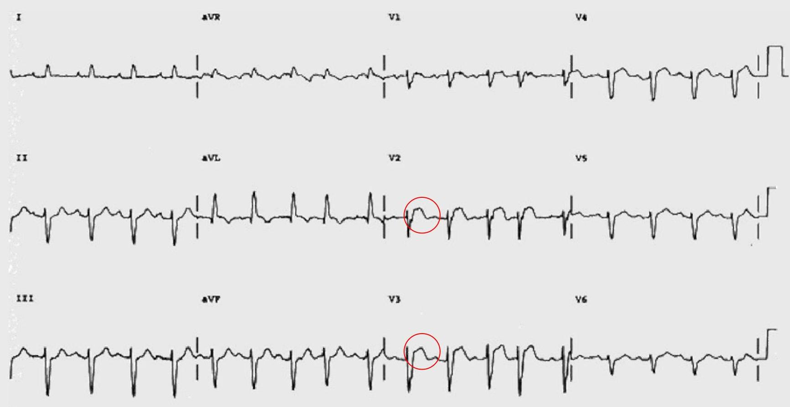
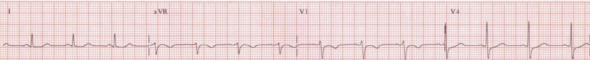
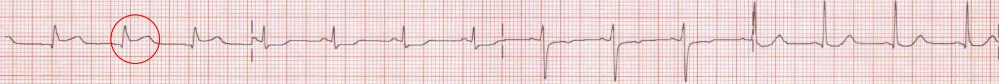
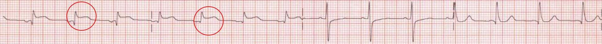
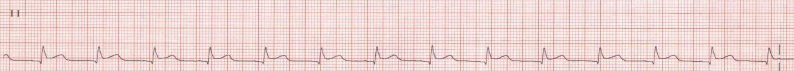

💔
Topic 09
Myocardial Infarction
01
Evolution of MI Changes
-
Within hours:
- T wave may become peaked
- ST segment may begin to rise
-
Within 24 hours:
- T wave inverts (may or may not persist)
- ST elevation begins to resolve
- If a left ventricular aneurysm forms, ST elevation may persist
-
Within a few days:
- pathological Q waves can form and usually persist
02
Localization
The leads affected determine the site of the infarct.
| Location | Leads Affected |
|---|---|
| Inferior | II, III, aVF |
| Anteroseptal | V1-V4 |
| Anterolateral | V4-V6, I, aVL |
| Posterior | Tall wide R and ST↓ in V1 and V2 |
03
ECG Examples
Acute Anterior MI

Inferior MI




Knowledge Check
Test Your Understanding
Assess your ability to identify MI stages and localize infarcts based on ECG leads.
Loading quiz...